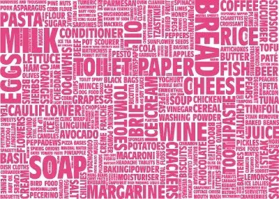

{kind=link}

http://i799.photobucket.com/albums/yy278/beapuff/graphics/backgrounds/160.jpg{kind=link}
I have a confession to make. I’ve been binging lately — on words. This is the way it happens with me. I go in these cycles, which are almost predictable. For months, I am wrapped in a cocoon of words, obsessed with books. I’m absorbing the wonderful words within, letting them instruct me, enthrall me, merge with my soul. And then, when I am filled to the brim with lyrical phrases and ideas and visuals that trigger my own memories, I move into purging mode, whereby I begin allowing my own words to spill out onto the paper.
Of course, even when I’m in consumption mode, I’m almost always writing something — an article, a column, a blog post, email messages to colleagues and friends. But I’m holding back during those times. It’s not all that I have. I’m still absorbing, collecting. Only after that phase is complete, when I can no longer keep it in, does my richest writing happen.
One of several books I have going right now is Page After Page by Heather Sellers. Heather talks about the “input and output” of the writing life, and how we ought to approach each to get the most out of our creative work.
She says (p.21-22):
“Writers have to be very secretive. They also have to be very communal. Successful writers learn how to navigate between the two states…
“The yakking you is just as important as the quiet you. The trick…is to be able to choose and conjure the appropriate productive state on command.
“Make your input — the stuff you take in to feed your writing — very communal. Find out what everyone else knows. Immerse yourself in the rivers — books, writers, readers — that feed the ocean of writing.”
As for the output? That’s the secret part, she says. We need to protect our creative work to some extent, to not always talk about it. “I have a new project I’m working on” is usually enough.
“The words coming in all day are the words you have to work with and you must have a sacred space in your personality that is totally silent,” she says. “The flow of words that you were born to write down must have a silent chamber in you in which to reverberate.”
Output = private
These are rich, true words, to the successful writer. In fact, I’m always a little bit surprised when people share large pieces of their Works in Progress publicly, before their time. As one author friend once told me, “Guard your work furiously early on in the process.” Eventually we do need feedback, but it’s important for us to discern when it’s a time to take in, and when it’s a time to let out, and with whom.
Most writers I know are a fairly even blend of extrovert and introvert. Our introverted selves enjoy being in our cocoons, but we know that if we were to stay in them, we could not be excellent writers. We need to move beyond our cozy writerly world to absorb the outer world in all its vitality. Only after we’ve actively engaged in the world can we return back into ourselves and create something beautiful and fresh.
Do you recognize your patterns of binging and purging, of taking in and letting out? What guidelines have you set for yourself in order to keep the balance?